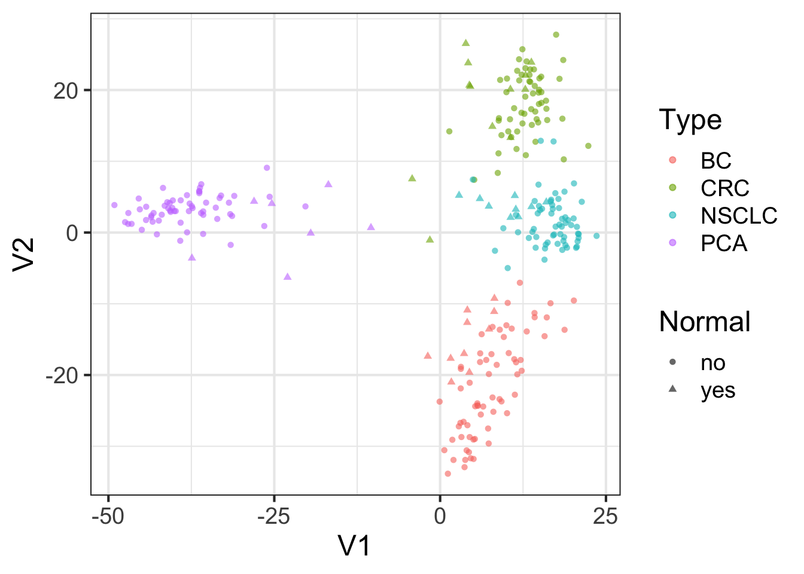

(PART) Bioconductor
Examples
GEOquery to multidimensional scaling
Data containers–SummarizedExperiment

Use the GEOquery package to fetch data about GSE103512.
library(GEOquery)
gse = getGEO("GSE103512")[[1]]
gse## ExpressionSet (storageMode: lockedEnvironment)
## assayData: 54715 features, 280 samples
## element names: exprs
## protocolData: none
## phenoData
## sampleNames: GSM2772660 GSM2772661 ... GSM2772939 (280 total)
## varLabels: title geo_accession ... weight:ch1 (72 total)
## varMetadata: labelDescription
## featureData
## featureNames: 1007_PM_s_at 1053_PM_at ... AFFX-TrpnX-M_at (54715
## total)
## fvarLabels: ID GB_ACC ... Gene Ontology Molecular Function (16
## total)
## fvarMetadata: Column Description labelDescription
## experimentData: use 'experimentData(object)'
## Annotation: GPL13158Examine two variables of interest, cancer type and tumor/normal status.
with(pData(gse),table(`cancer type:ch1`,`normal:ch1`))## normal:ch1
## cancer type:ch1 no yes
## BC 65 10
## CRC 57 12
## NSCLC 60 9
## PCA 60 7Information about features measured are also included.
Gene Symbol Gene Title1007_PM_s_at DDR1 discoidin domain receptor tyrosine kinase 1 1053_PM_at RFC2 replication factor C (activator 1) 2, 40kDa 117_PM_at HSPA6 heat shock 70kDa protein 6 (HSP70B’) 121_PM_at PAX8 paired box 8 1255_PM_g_at GUCA1A guanylate cyclase activator 1A (retina) 1294_PM_at UBA7 ubiquitin-like modifier activating enzyme 7 ENTREZ_GENE_ID 1007_PM_s_at 780 1053_PM_at 5982 117_PM_at 3310 121_PM_at 7849 1255_PM_g_at 2978 1294_PM_at 7318
Filter gene expression by variance to find most informative genes.
sds = apply(exprs(gse),1,sd)
dat = exprs(gse)[order(sds,decreasing = TRUE)[1:500],]Perform multidimensional scaling and prepare for plotting.
mdsvals = cmdscale(dist(t(dat)))
mdsvals = as.data.frame(mdsvals)
mdsvals$Type=factor(pData(gse)[,'cancer type:ch1'])
mdsvals$Normal = factor(pData(gse)[,'normal:ch1'])And do the plot.
library(ggplot2)
ggplot(mdsvals, aes(x=V1,y=V2,shape=Normal,color=Type)) +
geom_point( alpha=0.6) + theme(text=element_text(size = 18))